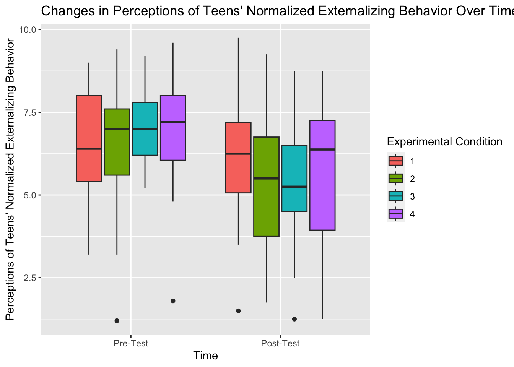
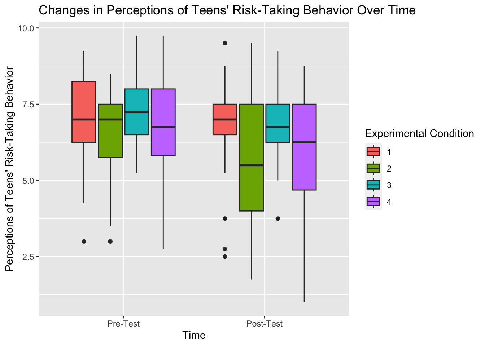
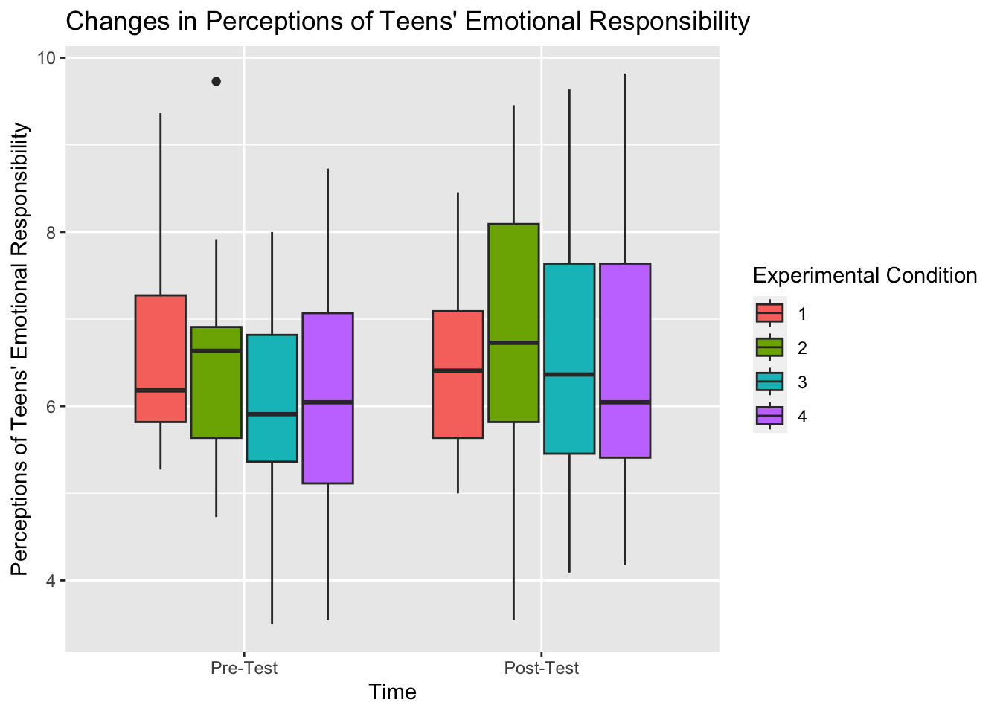
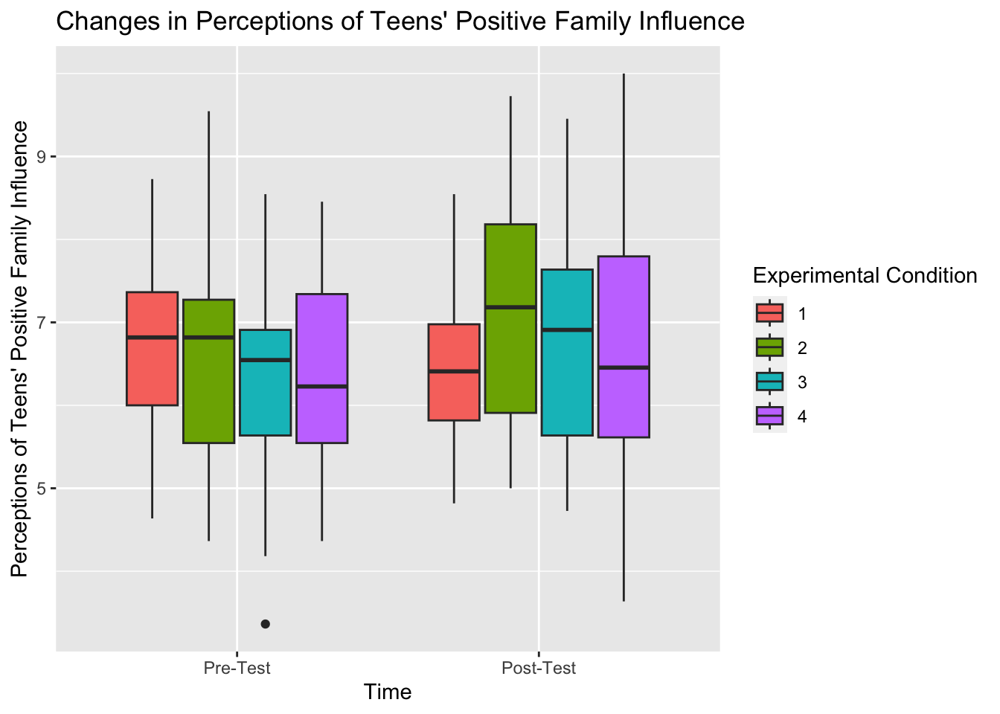
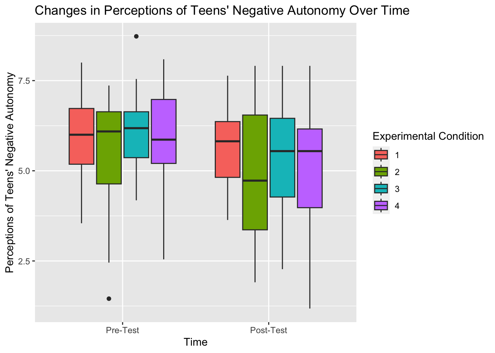
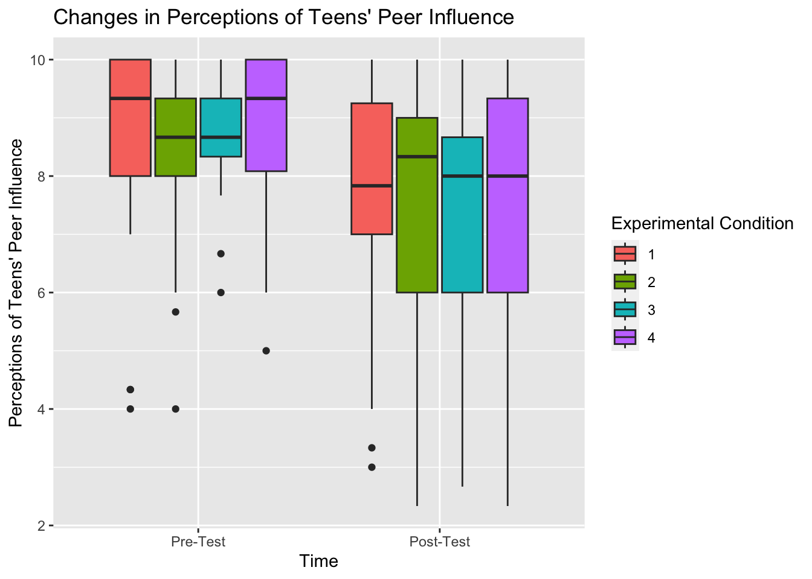

I’m working on a poster for the upcoming SRA conference. The project I’m presenting is an intervention study in which we presented participants with counterstereotyped information about teens with the goal of improving their perceptions of adolescence. There were 4 total conditions: 3 received different presentations of teen counterstereotypes and 1 control group completed an unrelated activity about COVID and medical ethics. We measured their views of teens on several dimensions (e.g., risk-taking behavior, academic engagement, emotional responsibility) with a pre-test and a post-test (about one month later). I will focus on two main findings in my presentation:
Overall, participants ended the study with more positive views of teens, even those in the control group. We got the outcome we wanted, but it doesn’t seem that the intervention was driving that effect.
Changes in views of teens predicted positive behavioral intentions among the participants themselves. For example, participants who had more positive perceptions of teens’ relationships with their family members at the end of the study also reported that they were more likely to express gratitude to a family member themselves.
For this portfolio piece, I will focus on the first finding (overall changes in views of teens over time) and try to find the best way to present this main effect visually with my poster.
This project produced a very large dataset, but for the purposes of this piece I subsetted it to include only the following variables:
RespID: participant ID number
Demographic variables: Gender, Ethnicity, Race, Age
ExperimentalTreatment (1-4): The condition to which a participant was assigned, with 1-3 representing different types of interventions and 4 representing the control group.
Condition 1: Research-focused presentation of teen counterstereotyping information
Condition 2: Casual presentation of teen counterstereotyping information
Condition 3: Research-focused presentation of college student (late adolescence/early emerging adulthood) counterstereotyping information
Condition 4: Control group (COVID medical ethics reading)
Throughout this document, I also completed a series of wide-to-long transformations to allow for analyses using time (pre- to post-test) as an independent variable.
A series of descriptive tables and mixed two-way ANOVAs with figures to represent the change in perceptions of teens over time.
Although the ANOVAs showed a consistent main effect of time on perceptions of teens, the plots do not necessarily show consistent, meaningful changes in views of teens after breaking down the results by condition.
I followed this tutorial to complete the ANOVAs: https://www.datanovia.com/en/lessons/mixed-anova-in-r/
library(haven)
library(tidyverse)
library(car)
library(rstatix)counterstereotype_data <- read_sav("/Users/sophieboyd/Desktop/Research/Buchanan/SRA/CollegeData.sav")counterstereotype_filtered <- counterstereotype_data %>%
select(RespID, Gender, Ethnicity, Race, Age, ExperimentalTreatment, VoT_MS_Antisocial,VOT_P2EB_ANTISOCIAL, VoT_MS_NEB, VOT_P2EB_NEB, VoT_MS_RT, VOT_P2EB_RT, VoT_MS_AE, VOT_P2AE, VoT_MS_ER, VOT_P2PA_ER, VoT_MS_PAL, VOT_P2PA_PATL, VoT_MS_PFI, VOT_P2_PFI, VoT_MS_NA, VOT_P2_NA, VoT_MS_PI, VOT_P2_PI) %>%
filter(!is.na(ExperimentalTreatment))counterstereotype_filtered %>%
group_by(ExperimentalTreatment) %>%
summarize(mean_NEB_pre = mean(VoT_MS_NEB, na.rm = TRUE), mean_NEB_post = mean(VOT_P2EB_NEB, na.rm = TRUE)) %>%
ungroup()## # A tibble: 4 × 3
## ExperimentalTreatment mean_NEB_pre mean_NEB_post
## <dbl> <dbl> <dbl>
## 1 1 6.51 6.13
## 2 2 6.58 5.41
## 3 3 7.10 5.44
## 4 4 7.05 5.60counterstereotype_filtered %>%
summarize(mean_NEB_pre = mean(VoT_MS_NEB, na.rm = TRUE), mean_NEB_post = mean(VOT_P2EB_NEB, na.rm = TRUE))## # A tibble: 1 × 2
## mean_NEB_pre mean_NEB_post
## <dbl> <dbl>
## 1 6.81 5.63counterstereotype_filtered %>%
group_by(ExperimentalTreatment) %>%
summarize(mean_risktaking_pre = mean(VoT_MS_RT, na.rm = TRUE), mean_risktaking_post = mean(VOT_P2EB_RT, na.rm = TRUE)) %>%
ungroup()## # A tibble: 4 × 3
## ExperimentalTreatment mean_risktaking_pre mean_risktaking_post
## <dbl> <dbl> <dbl>
## 1 1 6.97 6.74
## 2 2 6.54 5.73
## 3 3 7.36 6.77
## 4 4 6.82 5.96counterstereotype_filtered %>%
summarize(mean_RT_pre = mean(VoT_MS_RT, na.rm = TRUE), mean_RT_post = mean(VOT_P2EB_RT, na.rm = TRUE))## # A tibble: 1 × 2
## mean_RT_pre mean_RT_post
## <dbl> <dbl>
## 1 6.93 6.29counterstereotype_filtered %>%
group_by(ExperimentalTreatment) %>%
summarize(mean_academicengagement_pre = mean(VoT_MS_AE, na.rm = TRUE), mean_academicengagement_post = mean(VOT_P2AE, na.rm = TRUE)) %>%
ungroup()## # A tibble: 4 × 3
## ExperimentalTreatment mean_academicengagement_pre mean_academicengagement_post
## <dbl> <dbl> <dbl>
## 1 1 6.35 6.01
## 2 2 6.36 6.75
## 3 3 5.90 6.69
## 4 4 5.94 6.19counterstereotype_filtered %>%
summarize(mean_AE_pre = mean(VoT_MS_AE, na.rm = TRUE), mean_RT_post = mean(VOT_P2AE, na.rm = TRUE))## # A tibble: 1 × 2
## mean_AE_pre mean_RT_post
## <dbl> <dbl>
## 1 6.14 6.42counterstereotype_filtered %>%
group_by(ExperimentalTreatment) %>%
summarize(mean_emotionalresponsibility_pre = mean(VoT_MS_ER, na.rm = TRUE), mean_emotionalresponsibility_post = mean(VOT_P2PA_ER, na.rm = TRUE)) %>%
ungroup()## # A tibble: 4 × 3
## ExperimentalTreatment mean_emotionalresponsibility_pre mean_emotionalrespons…¹
## <dbl> <dbl> <dbl>
## 1 1 6.60 6.43
## 2 2 6.42 6.85
## 3 3 5.93 6.74
## 4 4 6.14 6.63
## # ℹ abbreviated name: ¹mean_emotionalresponsibility_postcounterstereotype_filtered %>%
summarize(mean_ER_pre = mean(VoT_MS_ER, na.rm = TRUE), mean_ER_post = mean(VOT_P2PA_ER, na.rm = TRUE))## # A tibble: 1 × 2
## mean_ER_pre mean_ER_post
## <dbl> <dbl>
## 1 6.27 6.67counterstereotype_filtered %>%
group_by(ExperimentalTreatment) %>%
summarize(mean_positiveapproach_pre = mean(VoT_MS_PAL, na.rm = TRUE), mean_risktaking_post = mean(VOT_P2PA_PATL, na.rm = TRUE)) %>%
ungroup()## # A tibble: 4 × 3
## ExperimentalTreatment mean_positiveapproach_pre mean_risktaking_post
## <dbl> <dbl> <dbl>
## 1 1 6.67 6.45
## 2 2 6.45 6.83
## 3 3 6.15 6.82
## 4 4 6.35 6.36counterstereotype_filtered %>%
summarize(mean_PAL_pre = mean(VoT_MS_PAL, na.rm = TRUE), mean_PAL_post = mean(VOT_P2PA_PATL, na.rm = TRUE))## # A tibble: 1 × 2
## mean_PAL_pre mean_PAL_post
## <dbl> <dbl>
## 1 6.40 6.62counterstereotype_filtered %>%
group_by(ExperimentalTreatment) %>%
summarize(mean_PFI_pre = mean(VoT_MS_PFI, na.rm = TRUE), mean_PFI_post = mean(VOT_P2_PFI, na.rm = TRUE)) %>%
ungroup()## # A tibble: 4 × 3
## ExperimentalTreatment mean_PFI_pre mean_PFI_post
## <dbl> <dbl> <dbl>
## 1 1 6.64 6.46
## 2 2 6.57 7.12
## 3 3 6.24 6.88
## 4 4 6.40 6.78counterstereotype_filtered %>%
summarize(mean_PFI_pre = mean(VoT_MS_PFI, na.rm = TRUE), mean_PFI_post = mean(VOT_P2_PFI, na.rm = TRUE))## # A tibble: 1 × 2
## mean_PFI_pre mean_PFI_post
## <dbl> <dbl>
## 1 6.46 6.82counterstereotype_filtered %>%
group_by(ExperimentalTreatment) %>%
summarize(mean_negativeautonomy_pre = mean(VoT_MS_NA, na.rm = TRUE), mean_negativeautonomy_post = mean(VOT_P2_NA, na.rm = TRUE)) %>%
ungroup()## # A tibble: 4 × 3
## ExperimentalTreatment mean_negativeautonomy_pre mean_negativeautonomy_post
## <dbl> <dbl> <dbl>
## 1 1 5.87 5.64
## 2 2 5.51 4.90
## 3 3 6.04 5.47
## 4 4 5.86 5.09counterstereotype_filtered %>%
summarize(mean_NA_pre = mean(VoT_MS_NA, na.rm = TRUE), mean_NA_post = mean(VOT_P2_NA, na.rm = TRUE))## # A tibble: 1 × 2
## mean_NA_pre mean_NA_post
## <dbl> <dbl>
## 1 5.82 5.27counterstereotype_filtered %>%
group_by(ExperimentalTreatment) %>%
summarize(mean_peerinfluence_pre = mean(VoT_MS_PI, na.rm = TRUE), mean_peerinfluence_post = mean(VOT_P2_PI, na.rm = TRUE)) %>%
ungroup()## # A tibble: 4 × 3
## ExperimentalTreatment mean_peerinfluence_pre mean_peerinfluence_post
## <dbl> <dbl> <dbl>
## 1 1 8.71 7.68
## 2 2 8.40 7.34
## 3 3 8.77 7.37
## 4 4 8.89 7.42counterstereotype_filtered %>%
summarize(mean_PI_pre = mean(VoT_MS_PI, na.rm = TRUE), mean_PI_post = mean(VOT_P2_PI, na.rm = TRUE))## # A tibble: 1 × 2
## mean_PI_pre mean_PI_post
## <dbl> <dbl>
## 1 8.70 7.45counterstereotype_long_NEB <- counterstereotype_filtered %>%
pivot_longer(
cols = starts_with(c("VoT_MS_NEB", "VOT_P2EB_NEB")),
names_to = "Time_NEB",
values_to = "VOT_NEB")counterstereotype_long_NEB$time <- ifelse(counterstereotype_long_NEB$Time_NEB == "VoT_MS_NEB", 1, 2)NEB.anova <- anova_test(
data = counterstereotype_long_NEB, dv = VOT_NEB, wid = RespID,
between = ExperimentalTreatment, within = time
)
get_anova_table(NEB.anova)## ANOVA Table (type III tests)
##
## Effect DFn DFd F p p<.05 ges
## 1 ExperimentalTreatment 3 108 0.300 8.25e-01 0.005
## 2 time 1 108 28.955 4.34e-07 * 0.093
## 3 ExperimentalTreatment:time 3 108 1.974 1.22e-01 0.021Significant main effect of time (based on overall means above, a decrease in perceptions of teens’ normalized externalizing behavior from pre- to post-test)
counterstereotype_long_NEB$ETlabel <- factor(counterstereotype_long_NEB$ExperimentalTreatment)
counterstereotype_long_NEB$timelabel <- factor(counterstereotype_long_NEB$time,
labels = c("Pre-Test", "Post-Test"))counterstereotype_long_NEB %>%
ggplot(aes(
x = timelabel,
y = VOT_NEB,
fill = ETlabel
)) +
geom_boxplot() +
labs(
x = "Time",
y = "Perceptions of Teens' Normalized Externalizing Behavior",
fill = "Experimental Condition",
title = "Changes in Perceptions of Teens' Normalized Externalizing Behavior Over Time"
)
counterstereotype_long_RT <- counterstereotype_filtered %>%
pivot_longer(
cols = starts_with(c("VoT_MS_RT", "VOT_P2EB_RT")),
names_to = "Time_RT",
values_to = "VOT_RT")counterstereotype_long_RT$time <- ifelse(counterstereotype_long_RT$Time_RT == "VoT_MS_RT", 1, 2)RT.anova <- anova_test(
data = counterstereotype_long_RT, dv = VOT_RT, wid = RespID,
between = ExperimentalTreatment, within = time
)
get_anova_table(RT.anova)## ANOVA Table (type III tests)
##
## Effect DFn DFd F p p<.05 ges
## 1 ExperimentalTreatment 3 107 3.081 0.031 * 0.048
## 2 time 1 107 7.426 0.008 * 0.028
## 3 ExperimentalTreatment:time 3 107 0.944 0.422 0.011Significant main effect of time (based on overall means above, a decrease in perceptions of teens’ risk-taking behavior from pre- to post-test)
Significant main effect of condition (note to self: investigate this later with post-hoc tests!)
counterstereotype_long_RT$ETlabel <- factor(counterstereotype_long_RT$ExperimentalTreatment)
counterstereotype_long_RT$timelabel <- factor(counterstereotype_long_RT$time,
labels = c("Pre-Test", "Post-Test"))counterstereotype_long_RT %>%
ggplot(aes(
x = timelabel,
y = VOT_RT,
fill = ETlabel
)) +
geom_boxplot() +
labs(
x = "Time",
y = "Perceptions of Teens' Risk-Taking Behavior",
fill = "Experimental Condition",
title = "Changes in Perceptions of Teens' Risk-Taking Behavior Over Time"
)
counterstereotype_long_AE <- counterstereotype_filtered %>%
pivot_longer(
cols = starts_with(c("VoT_MS_AE", "VOT_P2AE")),
names_to = "Time_AE",
values_to = "VOT_AE")counterstereotype_long_AE$time <- ifelse(counterstereotype_long_AE$Time_AE == "VoT_MS_AE", 1, 2)AE.anova <- anova_test(
data = counterstereotype_long_AE, dv = VOT_AE, wid = RespID,
between = ExperimentalTreatment, within = time
)
get_anova_table(AE.anova)## ANOVA Table (type III tests)
##
## Effect DFn DFd F p p<.05 ges
## 1 ExperimentalTreatment 3 108 1.200 0.313 0.017
## 2 time 1 108 2.293 0.133 0.010
## 3 ExperimentalTreatment:time 3 108 1.401 0.246 0.018No significant effects for views of teens’ academic engagement
counterstereotype_long_ER <- counterstereotype_filtered %>%
pivot_longer(
cols = starts_with(c("VoT_MS_ER", "VOT_P2PA_ER")),
names_to = "Time_ER",
values_to = "VOT_ER")counterstereotype_long_ER$time <- ifelse(counterstereotype_long_ER$Time_ER == "VoT_MS_ER", 1, 2)ER.anova <- anova_test(
data = counterstereotype_long_ER, dv = VOT_ER, wid = RespID,
between = ExperimentalTreatment, within = time
)
get_anova_table(ER.anova)## ANOVA Table (type III tests)
##
## Effect DFn DFd F p p<.05 ges
## 1 ExperimentalTreatment 3 108 0.607 0.612 0.008
## 2 time 1 108 5.655 0.019 * 0.025
## 3 ExperimentalTreatment:time 3 108 1.032 0.382 0.014Significant main effect of time (based on overall means above, an increase in perceptions of teens’ emotional responsibility from pre- to post-test)
counterstereotype_long_ER$ETlabel <- factor(counterstereotype_long_ER$ExperimentalTreatment)
counterstereotype_long_ER$timelabel <- factor(counterstereotype_long_ER$time,
labels = c("Pre-Test", "Post-Test"))counterstereotype_long_ER %>%
ggplot(aes(
x = timelabel,
y = VOT_ER,
fill = ETlabel
)) +
geom_boxplot() +
labs(
x = "Time",
y = "Perceptions of Teens' Emotional Responsibility",
fill = "Experimental Condition",
title = "Changes in Perceptions of Teens' Emotional Responsibility"
)
counterstereotype_long_PAL <- counterstereotype_filtered %>%
pivot_longer(
cols = starts_with(c("VoT_MS_PAL", "VOT_P2PA_PATL")),
names_to = "Time_PAL",
values_to = "VOT_PAL")counterstereotype_long_PAL$time <- ifelse(counterstereotype_long_PAL$Time_PAL == "VoT_MS_PAL", 1, 2)PAL.anova <- anova_test(
data = counterstereotype_long_PAL, dv = VOT_PAL, wid = RespID,
between = ExperimentalTreatment, within = time
)
get_anova_table(PAL.anova)## ANOVA Table (type III tests)
##
## Effect DFn DFd F p p<.05 ges
## 1 ExperimentalTreatment 3 108 0.861 0.464 0.011
## 2 time 1 108 2.560 0.113 0.012
## 3 ExperimentalTreatment:time 3 108 1.245 0.297 0.017No significant effects for views of teens’ positive approach to life
counterstereotype_long_PFI <- counterstereotype_filtered %>%
pivot_longer(
cols = starts_with(c("VoT_MS_PFI", "VOT_P2_PFI")),
names_to = "Time_PFI",
values_to = "VOT_PFI")counterstereotype_long_PFI$time <- ifelse(counterstereotype_long_PFI$Time_PFI == "VoT_MS_PFI", 1, 2)PFI.anova <- anova_test(
data = counterstereotype_long_PFI, dv = VOT_PFI, wid = RespID,
between = ExperimentalTreatment, within = time
)
get_anova_table(PFI.anova)## ANOVA Table (type III tests)
##
## Effect DFn DFd F p p<.05 ges
## 1 ExperimentalTreatment 3 108 0.798 0.498 0.011
## 2 time 1 108 4.653 0.033 * 0.021
## 3 ExperimentalTreatment:time 3 108 0.898 0.445 0.013Significant main effect of time (based on overall means above, an increase in perceptions of teens’ positive family influence from pre- to post-test)
counterstereotype_long_PFI$ETlabel <- factor(counterstereotype_long_PFI$ExperimentalTreatment)
counterstereotype_long_PFI$timelabel <- factor(counterstereotype_long_PFI$time,
labels = c("Pre-Test", "Post-Test"))counterstereotype_long_PFI %>%
ggplot(aes(
x = timelabel,
y = VOT_PFI,
fill = ETlabel
)) +
geom_boxplot() +
labs(
x = "Time",
y = "Perceptions of Teens' Positive Family Influence",
fill = "Experimental Condition",
title = "Changes in Perceptions of Teens' Positive Family Influence"
)
counterstereotype_long_NA <- counterstereotype_filtered %>%
pivot_longer(
cols = starts_with(c("VoT_MS_NA", "VOT_P2_NA")),
names_to = "Time_NA",
values_to = "VOT_NA")counterstereotype_long_NA$time <- ifelse(counterstereotype_long_NA$Time_NA == "VoT_MS_NA", 1, 2)NA.anova <- anova_test(
data = counterstereotype_long_NA, dv = VOT_NA, wid = RespID,
between = ExperimentalTreatment, within = time
)
get_anova_table(NA.anova)## ANOVA Table (type III tests)
##
## Effect DFn DFd F p p<.05 ges
## 1 ExperimentalTreatment 3 108 1.460 0.229 0.023
## 2 time 1 108 8.610 0.004 * 0.032
## 3 ExperimentalTreatment:time 3 108 0.547 0.651 0.006Significant main effect of time (based on overall means above, a decrease in perceptions of teens’ negative autonomy from pre- to post-test)
counterstereotype_long_NA$ETlabel <- factor(counterstereotype_long_NA$ExperimentalTreatment)
counterstereotype_long_NA$timelabel <- factor(counterstereotype_long_NA$time,
labels = c("Pre-Test", "Post-Test"))counterstereotype_long_NA %>%
ggplot(aes(
x = timelabel,
y = VOT_NA,
fill = ETlabel
)) +
geom_boxplot() +
labs(
x = "Time",
y = "Perceptions of Teens' Negative Autonomy",
fill = "Experimental Condition",
title = "Changes in Perceptions of Teens' Negative Autonomy Over Time"
)
counterstereotype_long_PI <- counterstereotype_filtered %>%
pivot_longer(
cols = starts_with(c("VoT_MS_PI", "VOT_P2_PI")),
names_to = "Time_PI",
values_to = "VOT_PI")counterstereotype_long_PI$time <- ifelse(counterstereotype_long_PI$Time_PI == "VoT_MS_PI", 1, 2)PI.anova <- anova_test(
data = counterstereotype_long_PI, dv = VOT_PI, wid = RespID,
between = ExperimentalTreatment, within = time
)
get_anova_table(PI.anova)## ANOVA Table (type III tests)
##
## Effect DFn DFd F p p<.05 ges
## 1 ExperimentalTreatment 3 108 0.248 8.63e-01 0.004
## 2 time 1 108 25.427 1.86e-06 * 0.103
## 3 ExperimentalTreatment:time 3 108 0.267 8.49e-01 0.004Significant main effect of time (based on overall means above, a decrease in perceptions of teens’ peer influence from pre- to post-test)
counterstereotype_long_PI$ETlabel <- factor(counterstereotype_long_PI$ExperimentalTreatment)
counterstereotype_long_PI$timelabel <- factor(counterstereotype_long_PI$time,
labels = c("Pre-Test", "Post-Test"))counterstereotype_long_PI %>%
ggplot(aes(
x = timelabel,
y = VOT_PI,
fill = ETlabel
)) +
geom_boxplot() +
labs(
x = "Time",
y = "Perceptions of Teens' Peer Influence",
fill = "Experimental Condition",
title = "Changes in Perceptions of Teens' Peer Influence"
)